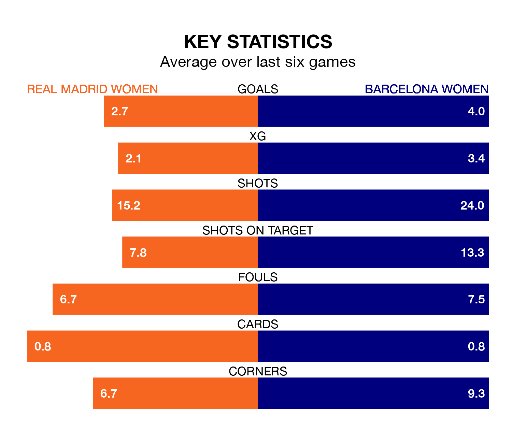

Liga F's top two sides face each other at the Estadio Alfredo Di Stéfano in Sunday's late kick-off, when second-placed Real Madrid Women host Barcelona Women.
Madrid Women have picked up 16 wins and one draw from 20 games so far this season, and sit nine points below the visitors going into the 5pm match.
Barcelona, meanwhile, have won 19 and drawn one, picking up 58 points.
With 89 goals in 20 games so far this season, Barcelona are the league's highest scorers with 4.4 goals per game. And they are conceding fewer than average, letting in five goals at a rate of 0.2 per game.
Madrid Women are also above average scorers, with 2.5 goals per game, compared to a league average of 1.5. They have conceded 1.1 goals per game.
In Caroline Graham Hansen, the away side have the league's sharpest shooter so far this season. She has notched 16 goals in 18 appearances.
The hosts' top scorers, with eight goals each, are Caroline Møller Hansen and Signe Kallesøe Bruun.
Madrid Women are in fantastic form in Liga F, with five wins and a draw from their last six games.
And also with five wins and a draw over that period, Barcelona's form is identical – they have both taken 16 points from 18.
In the last 10 years, Madrid Women and Barcelona have played each other on nine occasions. Barcelona won all of them.
On average, Madrid Women scored 0.6 goals and Barcelona 3.8 in those matches.
Their last meeting was on November 19, when Barcelona won 5-0 at home.
Madrid Women's last match was on March 16, a 1-0 win against Eibar Women, with Ivana Andrés Sanz getting the goal for Madrid Women.
Barcelona beat UD Granadilla Tenerife 7-0 last time out, on March 17, with Claudia Pina Medina (two), Alexia Putellas Segura, Fridolina Rolfö, Graham Hansen and Marta Torrejón Moya on the scoresheet.
Updated: 10:19 (UTC), 22/03/24